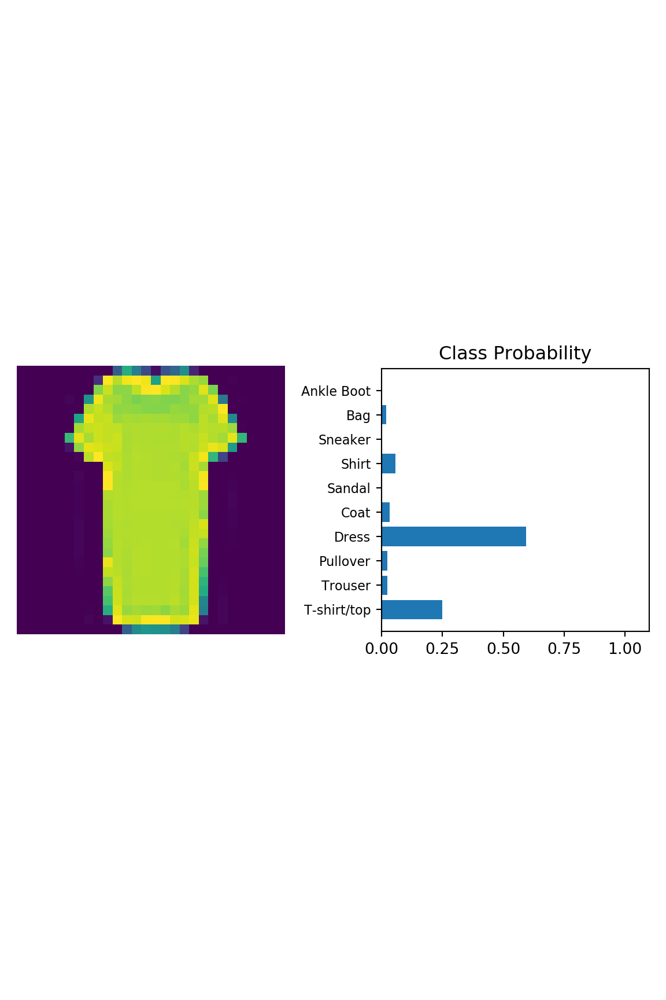

Chapter 8 Inference and Validation of MNIST Fashion
Source: https://www.kaggle.com/ysachit/inference-and-validation-ipynb
Now that you have a trained network, you can use it for making predictions. This is typically called inference, a term borrowed from statistics. However, neural networks have a tendency to perform too well on the training data and aren’t able to generalize to data that hasn’t been seen before. This is called overfitting and it impairs inference performance. To test for overfitting while training, we measure the performance on data not in the training set called the validation set. We avoid overfitting through regularization such as dropout while monitoring the validation performance during training.
import torch
import torchvision
import torch.nn as nn
import torchvision.transforms as transforms
import torchvision.datasets as datasets
torch.manual_seed(123)
#> <torch._C.Generator object at 0x7f7e299e7a50># testset = datasets.FashionMNIST('./mnist_fashion', download=True, train=False, transform=transforms)
pass8.1 Utility functions
import matplotlib.pyplot as plt
import numpy as np
def imshow(image, ax=None, title=None, normalize=True):
"""Imshow for Tensor."""
if ax is None:
fig, ax = plt.subplots()
image = image.numpy().transpose((1, 2, 0))
if normalize:
mean = np.array([0.485, 0.456, 0.406])
std = np.array([0.229, 0.224, 0.225])
image = std * image + mean
image = np.clip(image, 0, 1)
ax.imshow(image)
ax.spines['top'].set_visible(False)
ax.spines['right'].set_visible(False)
ax.spines['left'].set_visible(False)
ax.spines['bottom'].set_visible(False)
ax.tick_params(axis='both', length=0)
ax.set_xticklabels('')
ax.set_yticklabels('')
return ax
def view_classify(img, ps, version="MNIST"):
''' Function for viewing an image and it's predicted classes.
'''
ps = ps.data.numpy().squeeze()
fig, (ax1, ax2) = plt.subplots(figsize=(6,9), ncols=2)
ax1.imshow(img.resize_(1, 28, 28).numpy().squeeze())
ax1.axis('off')
ax2.barh(np.arange(10), ps)
ax2.set_aspect(0.1)
ax2.set_yticks(np.arange(10))
if version == "MNIST":
ax2.set_yticklabels(np.arange(10))
elif version == "Fashion":
ax2.set_yticklabels(['T-shirt/top',
'Trouser',
'Pullover',
'Dress',
'Coat',
'Sandal',
'Shirt',
'Sneaker',
'Bag',
'Ankle Boot'], size='small');
ax2.set_title('Class Probability')
ax2.set_xlim(0, 1.1)
plt.tight_layout()
plt.show()8.2 Load datasets
As usual, let’s start by loading the dataset through torchvision.
import torch
from torchvision import datasets, transforms
# Define a transform to normalize the data
transform = transforms.Compose([transforms.ToTensor(),
transforms.Normalize([0.5], [0.5])])
# Download and load the training data
trainset = datasets.FashionMNIST('mnist_fashion', download=True, train=True,
transform=transform)
train_loader = torch.utils.data.DataLoader(trainset, batch_size=64, shuffle=True)
# Download and load the test data
testset = datasets.FashionMNIST('mnist_fashion', download=True, train=False,
transform=transform)
test_loader = torch.utils.data.DataLoader(testset, batch_size=64, shuffle=True)8.3 Model
from torch import nn, optim
import torch.nn.functional as F
class Classifier(nn.Module):
def __init__(self):
super().__init__()
self.fc1 = nn.Linear(784, 256)
self.fc2 = nn.Linear(256, 128)
self.fc3 = nn.Linear(128, 64)
self.fc4 = nn.Linear(64, 10)
def forward(self, x):
# make sure input tensor is flattened
x = x.view(x.shape[0], -1)
x = F.relu(self.fc1(x))
x = F.relu(self.fc2(x))
x = F.relu(self.fc3(x))
x = F.log_softmax(self.fc4(x), dim=1)
return x
model = Classifier() 8.3.1 Instrospection
# number of elements in test
len(test_loader) # len: 157
#> 157
test_examples = enumerate(test_loader)
test_examples
# <enumerate object at 0x7f793ce486c0>
# iterate through dataset
#> <enumerate object at 0x7f7e23d4f828>
batch_idx, (img, label) = next(test_examples)
batch_idx
#> 0
img.shape # torch.Size([64, 1, 28, 28])
#> torch.Size([64, 1, 28, 28])
label.shape # torch.Size([64])
#> torch.Size([64])
images, labels = next(iter(test_loader))
# Get the class probabilities
ps = torch.exp(model(images))
# Make sure the shape is appropriate, we should get 10 class probabilities for 64 examples
print(ps.shape)
# torch.Size([64, 10])
#> torch.Size([64, 10])8.3.2 Most likely class
With the probabilities, we can get the most likely class using the ps.topk method. This returns the k highest values. Since we just want the most likely class, we can use ps.topk(1). This returns a tuple of the top-k values and the top-k indices. If the highest value is the fifth element, we’ll get back 4 as the index.
8.3.3 Compare predicted vs true labels
Now we can check if the predicted classes match the labels. This is simple to do by equating top_class and labels, but we have to be careful of the shapes. Here top_class is a 2D tensor with shape (64, 1) while labels is 1D with shape (64). To get the equality to work out the way we want, top_class and labels must have the same shape.
equals will have shape (64, 64), try it yourself. What it’s doing is comparing the one element in each row of top_class with each element in labels which returns 64 True/False boolean values for each row.
top_class == labels # tensor of 1,0
#> tensor([[0, 0, 0, ..., 0, 0, 0],
#> [0, 0, 0, ..., 0, 0, 0],
#> [0, 0, 0, ..., 0, 0, 0],
#> ...,
#> [0, 0, 0, ..., 0, 0, 0],
#> [0, 0, 0, ..., 0, 0, 0],
#> [0, 0, 0, ..., 0, 0, 0]], dtype=torch.uint8)equals = top_class == labels.view(*top_class.shape)
equals
#> tensor([[0],
#> [0],
#> [0],
#> [0],
#> [0],
#> [0],
#> [0],
#> [0],
#> [0],
#> [0],
#> [0],
#> [0],
#> [0],
#> [0],
#> [0],
#> [1],
#> [0],
#> [1],
#> [0],
#> [0],
#> [0],
#> [0],
#> [0],
#> [0],
#> [0],
#> [0],
#> [0],
#> [0],
#> [0],
#> [0],
#> [0],
#> [0],
#> [0],
#> [0],
#> [0],
#> [0],
#> [0],
#> [1],
#> [0],
#> [0],
#> [1],
#> [0],
#> [0],
#> [0],
#> [0],
#> [0],
#> [1],
#> [0],
#> [0],
#> [0],
#> [0],
#> [0],
#> [1],
#> [0],
#> [0],
#> [0],
#> [0],
#> [0],
#> [0],
#> [0],
#> [0],
#> [0],
#> [0],
#> [0]], dtype=torch.uint8)8.3.4 Untrained model
Now we need to calculate the percentage of correct predictions. equals has binary values, either 0 or 1. This means that if we just sum up all the values and divide by the number of values, we get the percentage of correct predictions.
we’ll need to convert equals to a float tensor. Note that when we take torch.mean it returns a scalar tensor, to get the actual value as a float we’ll need to do accuracy.item().
accuracy = torch.mean(equals.type(torch.FloatTensor))
print(f'Accuracy: {accuracy.item()*100}%')
#> Accuracy: 9.375%The network is untrained so it’s making random guesses and we should see an accuracy around 10%.
8.3.5 Train the model
Now let’s train our network and include our validation pass so we can measure how well the network is performing on the test set. Since we’re not updating our parameters in the validation pass, we can speed up our code by turning off gradients using torch.no_grad():
import sys
model = Classifier()
criterion = nn.NLLLoss()
optimizer = optim.Adam(model.parameters(), lr=0.003)
epochs = 5
steps = 0
train_losses, test_losses = [], []
for e in range(epochs):
running_loss = 0
for images, labels in train_loader:
optimizer.zero_grad()
log_ps = model(images)
loss = criterion(log_ps, labels)
loss.backward()
optimizer.step()
running_loss += loss.item()
else:
test_loss = 0
accuracy = 0
with torch.no_grad():
images , labels = next(iter(test_loader))
for images,labels in test_loader:
output = model(images)
test_loss += criterion(output,labels)
ps = torch.exp(model(images))
top_p, top_class = ps.topk(1, dim=1)
equals = top_class == labels.view(*top_class.shape)
accuracy += torch.mean(equals.type(torch.FloatTensor))
# Look at the most likely classes for the first 10 examples
train_losses.append(running_loss/len(train_loader))
test_losses.append(test_loss/len(test_loader))
print("Epoch: {}/{}.. ".format(e+1, epochs),
"Training Loss: {:.3f}.. ".format(running_loss/len(train_loader)),
"Test Loss: {:.3f}.. ".format(test_loss/len(test_loader)),
"Test Accuracy: {:.3f}".format(accuracy/len(test_loader)))
sys.stdout.flush()
#> Epoch: 1/5.. Training Loss: 0.510.. Test Loss: 0.433.. Test Accuracy: 0.840
#> Epoch: 2/5.. Training Loss: 0.386.. Test Loss: 0.434.. Test Accuracy: 0.846
#> Epoch: 3/5.. Training Loss: 0.357.. Test Loss: 0.443.. Test Accuracy: 0.845
#> Epoch: 4/5.. Training Loss: 0.330.. Test Loss: 0.360.. Test Accuracy: 0.871
#> Epoch: 5/5.. Training Loss: 0.312.. Test Loss: 0.365.. Test Accuracy: 0.8698.4 Overfitting
If we look at the training and validation losses as we train the network, we can see a phenomenon known as overfitting.
The network learns the training set better and better, resulting in lower training losses. However, it starts having problems generalizing to data outside the training set leading to the validation loss increasing. The ultimate goal of any deep learning model is to make predictions on new data, so we should strive to get the lowest validation loss possible. One option is to use the version of the model with the lowest validation loss, here the one around 8-10 training epochs. This strategy is called early-stopping. In practice, you’d save the model frequently as you’re training then later choose the model with the lowest validation loss.
8.4.1 Model with dropout
The most common method to reduce overfitting (outside of early-stopping) is dropout, where we randomly drop input units. This forces the network to share information between weights, increasing it’s ability to generalize to new data. Adding dropout in PyTorch is straightforward using the nn.Dropout module.
class ClassifierDO(nn.Module):
def __init__(self):
super().__init__()
self.fc1 = nn.Linear(784, 256)
self.fc2 = nn.Linear(256, 128)
self.fc3 = nn.Linear(128, 64)
self.fc4 = nn.Linear(64, 10)
# Dropout module with 0.2 drop probability
self.dropout = nn.Dropout(p=0.2)
def forward(self, x):
# make sure input tensor is flattened
x = x.view(x.shape[0], -1)
# Now with dropout
x = self.dropout(F.relu(self.fc1(x)))
x = self.dropout(F.relu(self.fc2(x)))
x = self.dropout(F.relu(self.fc3(x)))
# output so no dropout here
x = F.log_softmax(self.fc4(x), dim=1)
return x8.4.2 Train the model with dropout
During training we want to use dropout to prevent overfitting, but during inference we want to use the entire network. So, we need to turn off dropout during validation, testing, and whenever we’re using the network to make predictions. To do this, you use model.eval(). This sets the model to evaluation mode where the dropout probability is 0. You can turn dropout back on by setting the model to train mode with model.train(). In general, the pattern for the validation loop will look like this, where you turn off gradients, set the model to evaluation mode, calculate the validation loss and metric, then set the model back to train mode.
modelDO = ClassifierDO()
criterion = nn.NLLLoss()
optimizerDO = optim.Adam(modelDO.parameters(), lr=0.003)
epochs = 5
steps = 0
train_losses, test_losses = [], []
for e in range(epochs):
running_loss = 0
for images, labels in train_loader:
optimizerDO.zero_grad()
log_ps = modelDO(images)
loss = criterion(log_ps, labels)
loss.backward()
optimizerDO.step()
running_loss += loss.item()
else:
test_loss = 0
accuracy = 0
with torch.no_grad():
images , labels = next(iter(test_loader))
for images,labels in test_loader:
output = modelDO(images)
test_loss += criterion(output,labels)
ps = torch.exp(modelDO(images))
top_p, top_class = ps.topk(1, dim=1)
equals = top_class == labels.view(*top_class.shape)
accuracy += torch.mean(equals.type(torch.FloatTensor))
# Look at the most likely classes for the first 10 examples
train_losses.append(running_loss/len(train_loader))
test_losses.append(test_loss/len(test_loader))
print("Epoch: {}/{}.. ".format(e+1, epochs),
"Training Loss: {:.3f}.. ".format(running_loss/len(train_loader)),
"Test Loss: {:.3f}.. ".format(test_loss/len(test_loader)),
"Test Accuracy: {:.3f}".format(accuracy/len(test_loader)))
sys.stdout.flush()
#> Epoch: 1/5.. Training Loss: 0.605.. Test Loss: 0.543.. Test Accuracy: 0.809
#> Epoch: 2/5.. Training Loss: 0.482.. Test Loss: 0.529.. Test Accuracy: 0.816
#> Epoch: 3/5.. Training Loss: 0.450.. Test Loss: 0.466.. Test Accuracy: 0.836
#> Epoch: 4/5.. Training Loss: 0.431.. Test Loss: 0.471.. Test Accuracy: 0.837
#> Epoch: 5/5.. Training Loss: 0.416.. Test Loss: 0.465.. Test Accuracy: 0.8328.4.3 Inference on dropout model
Now that the model is trained, we can use it for inference. We’ve done this before, but now we need to remember to set the model in inference mode with model.eval(). You’ll also want to turn off autograd with the torch.no_grad() context.
# Test out your network!
# Switch to evaluation mode
modelDO.eval()
# load test dataset and get one image
#> ClassifierDO(
#> (fc1): Linear(in_features=784, out_features=256, bias=True)
#> (fc2): Linear(in_features=256, out_features=128, bias=True)
#> (fc3): Linear(in_features=128, out_features=64, bias=True)
#> (fc4): Linear(in_features=64, out_features=10, bias=True)
#> (dropout): Dropout(p=0.2)
#> )
dataiter = iter(test_loader) # len(test_loader): 157
images, labels = dataiter.next()
images.shape # images.shape: torch.Size([64, 1, 28, 28])
#> torch.Size([64, 1, 28, 28])
labels.shape # labels.shape: torch.Size([64])
# take first image
#> torch.Size([64])
img = images[0] # shape: torch.Size([1, 28, 28])
# Convert 2D image to 1D vector
img_pick = img.view(1, 784) # shape: torch.Size([1, 784])
img_pick.shape
# Calculate the class probabilities (softmax) for img
#> torch.Size([1, 784])
with torch.no_grad():
output = modelDO.forward(img_pick)
ps = torch.exp(output)
ps.shape # torch.Size([1, 10])
#> torch.Size([1, 10])
8.5 What’s next
In general, you won’t want to train a model everytime you need it. Instead, you’ll train once, save it, then load the model when you want to train more or use if for inference.
- Save
- Load
- Read image
- Find label